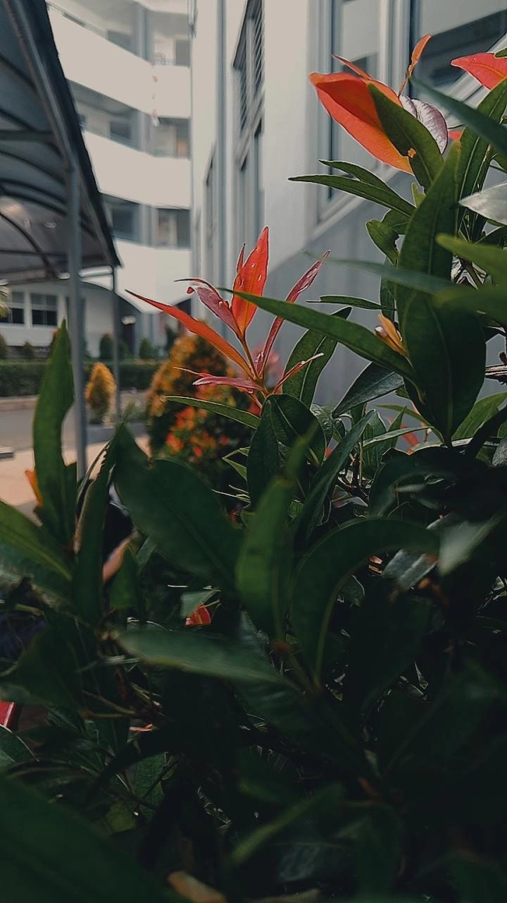

Read more
15, Agustus 2024
Foto ini menampilkan kontras menarik antara tanaman hijau segar di latar depan dan bebatuan bertekstur di latar belakang. Pencahayaan alami menyoroti detail dedaunan, menciptakan suasana alami yang tenang dan harmonis antara elemen tumbuhan dan batuan.
Read more
15, Agustus 2024
Bunga putih yang halus dengan aksen merah muda ini berdiri anggun di tengah hiruk pikuk latar urban, seolah menyampaikan bahwa keindahan alam tetap bisa bersinar meski berada di lingkungan yang serba modern. Dengan latar belakang bangunan yang kabur, bunga ini menjadi simbol harmoni antara alam dan kota.

Read more
15, Agustus 2024
Daun berwarna merah cerah ini tampak menonjol di antara dedaunan hijau, menambahkan semburat warna yang hidup di tengah latar urban modern. Gedung-gedung tinggi di belakangnya menciptakan kontras yang kuat antara kehidupan alami dan arsitektur kota. Meski berada di lingkungan perkotaan, tanaman ini berhasil mengekspresikan vitalitas dan keindahan alam yang tetap bertahan di tengah hiruk pikuk kehidupan kota.